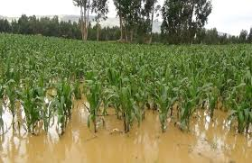

El impacto agrícola del Niño Costero
Durante las inundaciones de marzo de 2017, Piura sufrió una de las peores crisis agrícolas de su historia reciente. Campos de arroz, maíz y plátanos quedaron completamente anegados, destruyendo la fuente de ingresos de miles de pequeños agricultores.
“Lo que sembramos con esfuerzo desapareció bajo el agua. Ahora no tenemos ni comida ni dinero para sobrevivir” – comentó un agricultor afectado.
Consecuencias
- Más de 5,000 hectáreas de cultivos perdidas.
- Miles de familias quedaron sin ingresos y sin seguridad alimentaria.
- Impacto económico severo en la región, con pérdidas estimadas en millones de soles.
- Escasez de alimentos y aumento de precios locales.
Respuesta y ayuda
Organizaciones locales y ONGs distribuyeron semillas, alimentos y herramientas para ayudar a los agricultores a recuperarse. Sin embargo, la magnitud de la destrucción dificultó la reconstrucción inmediata de los campos.
Lecciones aprendidas
1. La agricultura requiere sistemas de prevención y drenaje adecuados.
2. Es vital contar con seguros agrícolas y ayuda gubernamental rápida.
3. La resiliencia de las comunidades es clave para superar desastres naturales.
Fuentes: RPP – “Agricultores de Piura pierden cultivos tras inundaciones” • El Comercio – “Crisis agrícola por el Niño Costero en Piura”.